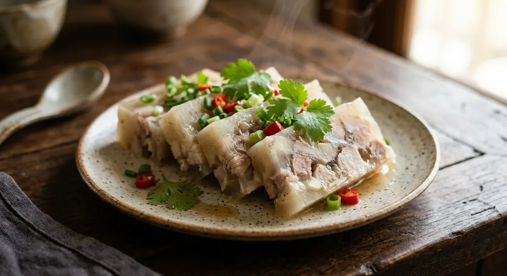

A curry with no broth — pork trotter simmered with a pounded garlic-and-peppercorn paste, left overnight to set into savoury jelly, then sliced and eaten cold.

กระด้าง means hard, stiff, set — and the name is the recipe. Chiang Mai University's culture encyclopedia explains the logic: Lanna winters are cold enough that a pot of thick trotter curry left out overnight sets by itself, the natural gelatine from pork skin and sinew doing the work no refrigerator was needed for. The dish appears on the winter ขันโตก table from December through to the second and third lunar months, and morning markets sell it in slabs, sliced to order.
The northern name is แก๋งกะด้าง — Toke-Tong, the Chiang Rai restaurant, notes that northern Thai has no r or l consonant clusters, and the local nicknames drift through แกงด้าง, หมูกระด้าง and หมูหนาว ("cold pork"). Krua.co's food story puts it plainly: a dish called a curry with no broth to sip, cut into wobbly blocks like a western jelly, but with pork and skin suspended through it.
Children of Chiang Mai even sang it: "แก๋งขะด้าง ขี้ก้างป๋าดุก แก๋งบ่สุก เอามาฮากไก้" — roughly, "hard-set curry with catfish bones in it, if it hasn't set, give it to the chickens." The rhyme is a recipe in itself: if the curry will not stiffen, it has failed.
| Thai | English | Amount |
|---|---|---|
| ขาหมู | Pig trotter, deboned and chopped | 500 g |
| กระเทียม | Garlic cloves | 20 |
| พริกไทยเม็ด | Whole peppercorns | ½ tbsp |
| รากผักชี | Coriander roots | 3 |
| หอมหัวใหญ่ | Onion (Chiang Mai paste, optional) | 1 |
| กะปิ | Shrimp paste (Chiang Mai paste, optional) | 1 tsp |
| เกลือ | Salt | ½ tsp |
| ผักชี / ต้นหอม | Coriander and spring onion, to serve | 1 tbsp each |
The Chiang Rai pot (CMU Encyclopedia): the paste turns orange — dried chillies soaked and pounded with lemongrass, galangal, garlic, shallots and shrimp paste; the trotter is singed, scraped and boiled first with salt and coriander root, then chopped small and returned with the paste, simmered until the sauce reduces "like tar" (ยางมะตูม) before it is poured out to set. The shortcut pot (Wongnai, ปีศาจหมู): pork marinated in lime or pineapple juice to tenderise, a tablespoon of ready-made northern chilli paste mixed with pounded coriander root and peppercorns, boiled in a cup of water, salted, and refrigerated overnight in a sealed box. The restaurant pot (Toke-Tong): 300 g trotter, 20 cloves garlic, half a tablespoon of peppercorns, three coriander roots — simmer one hour, add the pounded paste and salt, pour into a tray and set.
Two schools. Chiang Mai's version is white: the paste is peppercorns, shrimp paste, onion, garlic and coriander root, kneaded into the raw chopped trotter and fried until the oil splits before water goes in. Chiang Rai's version is orange: dried chillies, lemongrass, galangal, garlic and shallots in the paste, and the trotter is boiled first with salt and coriander root, then returned to reduce with the paste until the sauce is thick as tar. Same dish, two colour schemes.
Set it how? The old way is the winter itself — leave the pot out overnight in the cold air, which is why the dish belongs to the north. The modern way is the refrigerator. CMU notes some cooks now add dissolved agar powder (ผงวุ้น) to guarantee the set. Wongnai's cook, adapting the dish for the present, goes straight to the fridge in a sealed box.
What meat. Trotters everywhere — CMU is explicit that the sinew-rich leg is what makes the curry thick and set easily, with the skin not too thick. Wongnai's shortcut version simply says เนื้อหมู, generic pork, and leans on the ready-made paste instead.
The paste. Pounded from scratch (Toke-Tong, CMU's two schools) or a tablespoon of market-bought northern chilli paste (Wongnai) — the difference between a day's work and a weeknight.
The tenderiser. Wongnai alone marinates the pork in lime or pineapple juice before cooking, "to make it soft". The traditional pots rely on the long simmer and nothing else.
This recipe is translated from the following Thai-language sources. Where they disagree, we've said so.
1. CMU Creative Knowledge — "แกงกระด้าง" (the two schools, Chiang Mai and Chiang Rai, and the children's rhyme) — accl.cmu.ac.th
2. Toke-Tong (โตกตอง, Chiang Rai restaurant) — "วิธีทำแกงกระด้าง" (the recipe used here; the singeing and simmering tips) — toke-tong.com
3. Wongnai — "แกงกระด้าง" by ปีศาจหมู (the shortcut version with ready-made paste and pineapple tenderiser) — wongnai.com
4. Krua.co — "'แกงกระด้าง' อาหารเหนือแห่งลมหนาว" by เสาวลักษณ์ เชื้อคำ (the food story: names, regions, the khantoke tradition) — krua.co